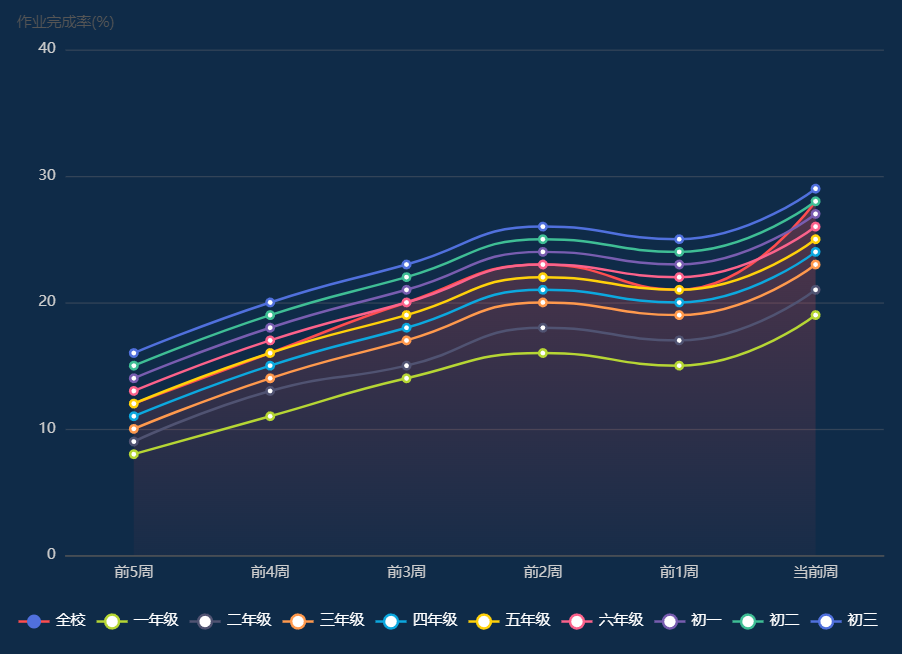

[ 图表 ] 作业情况
布置作业次数
统计口径：本学期开学至本日，全校体育教师发布的"状态≠作废"的作业，按执行模式拆分统计：
1.总量完成模式：1 条作业 = 计 1 次布置次数（只要作业周期开始，即计 1 次，不按天数拆分）
2.每日完成模式：1 条作业 = 作业周期内 ≤ 当前本日的已过自然天数（只统计已过完的日期，未来未到日期不计入）
· 例：作业周期 5.19–5.23，今日 5.21 → 已过 19、20、21 日，计 3 次；未来 22、23 日暂不计入。
作业完成人次
统计口径：本学期开学至本日，全校体育教师发布的"状态≠作废"的作业，经设备自动采集上报、满足对应模式达标规则的累计完成次数；请假学生不计入人次：
1.总量完成模式：学生在作业周期内，全部运动任务累计达标 → 计 1 次完成人次
2.每日完成模式：学生已过日期内单日全部运动任务达标 → 计 1 次完成人次
· 未到日期不计入统计
· 同一学生不同作业 / 不同日期达标可重复计数，按实际达标次数累加。
作业完成率
1.计算公式：作业完成率 = (作业完成人次/布置作业总人次基数)×100%
· 布置作业总人次基数
· 总量模式：作业覆盖学生数 × 1 次
· 每日模式：作业覆盖学生数 × 作业周期内 ≤ 当前本日的已过自然天数
2.统计周期：本学期开学至当前本周、截止到本日；
3.统计范围：仅状态≠作废作业，请假学生剔除分子、分母基数；
4.结果保留 2 位小数；分母为 0 时，完成率显示为无。
作业完成趋势
1.图表样式：折线图
2.统计口径：
· 维度：按周聚合，支持全校、各年级多线对比；
· 指标：每周截止当日，区分每日完成 / 总量完成模式计算作业完成率；
· 横轴：近 5 周（前 5 周→当前周）；
· 纵轴：完成率百分比；
渲染描述
1.数据源：固定渲染全部指标（布置作业次数、作业完成人次、作业完成率）及作业完成趋势折线图，用户不可勾选 / 取消，强制全部展示。
2.布局排版
· 上方数值区：横向排布 3 个指标标签；
· 下方图表区：占剩余区域，自适应宽度；
· 整体卡片宽度：按照用户配置的宽度模式（M / N、整行）自适应占比；
· 整体卡片高度：按用户配置高度，图表区自适应填充。
3.样式规范
· 每个指标项为独立数值卡片，布局横向均匀排布；
· 数值下方标注指标名称；
· 折线图区分全校、各年级多线条，配色与驾驶舱整体风格统一；
· 整体容器内边距、卡片间距保持统一。
学期作业情况
100 次
布置作业次数
1000 次
作业完成人次
20.12 %
作业完成率

学期作业情况


宽
高
应用
指标
图表